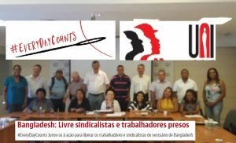
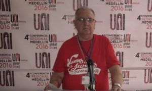

São Paulo, 06 de Março de 2018. Economista Pedro Pablo Kuczynski Godard Presidente de la República del Perú Lima Presente Excelentísimo señor presidente, Por medio de la presente, en no...
leia maisUniGráficos
Ataque aos direitos trabalhistas no Brasil terá reflexo nas Américas

Conatig apresenta na Argentina efeitos negativos da reforma trabalhista O avanço de metas sobre a unidade e a organização dos trabalhadores, definidas pela UNI Américas na última conferência na Colômbia, está em risco com o pro...
leia maisGráficos solidários a tecelões presos e violentados em Bangladesh

Os sindicatos dos gráficos e demais entidades sindicais podem ajudar. Tirem fotos com um cartaz de solidariedade, publicando-as on-line com hashtag #EveryDayCounts e envie communications@uniglobalunion.org Muitos trabalhadores conhece...
leia maisMãe da Conatig dá adeus e deixa legado de seu ideário aos gráficos
Se hoje há unidade da classe em torno da Conatig, que sabe respeitar diversidades e tem o gráfico como foco, é mérito de Adriana Rosenzvaig Se todo filho tem uma mãe, podemos considerar a trabalhadora gráfica argentina Adriana Rose...
leia maisDemocracia é parcial em jornais de PE, critica UNI Gráfico Américas

A livre negociação coletiva dos trabalhadores é sagrada e fere tal direito todo aquele que por qualquer meio tenta violá-lo, principalmente quando o empresariado usa do poder econômico para pressionar o empregado. Infelizmente, esta vi...
leia maisConservadorismo e neoliberalismo contra organização de mulheres
Conjuntura amplia os desafios da organização sindical das mulheres nas Américas, bem como aumenta a responsabilidade das entidades sindicais pela conscientização das trabalhadoras sobre a sindicalização e contra a violência de g...
leia mais